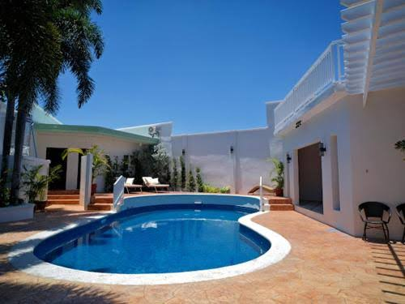
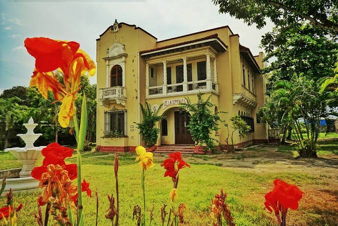
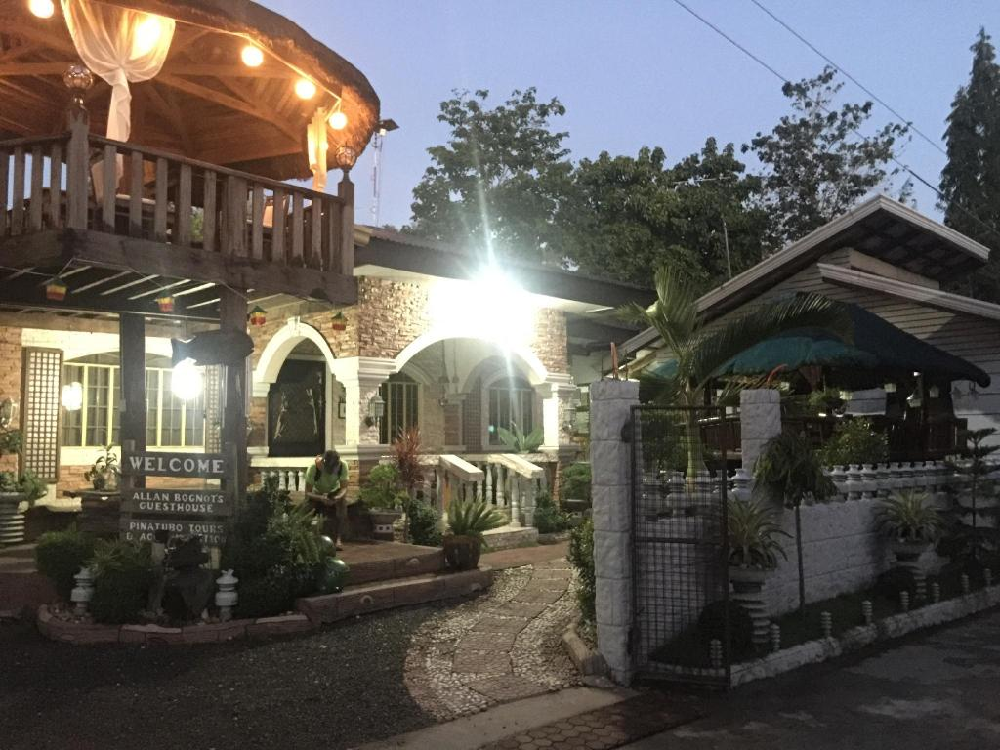
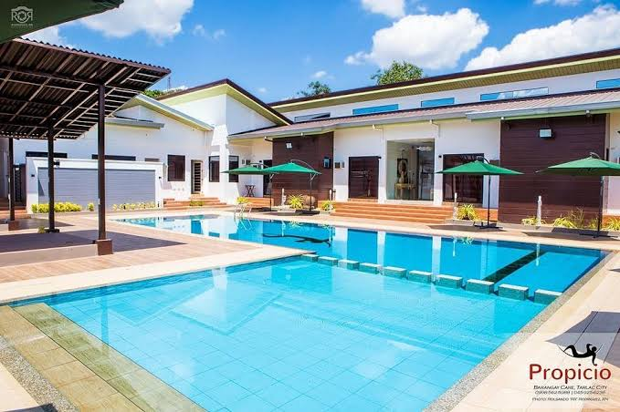

Guesthouses
Featured Guesthouses
-

Bahay ni Lola -

Pinatubo Base Guesthouse -

San Jose Pilgrim Guesthouse
Guesthouses in Tarlac offer something no hotel can fully replicate — a personal, human connection to the place you are visiting. Run by local families, these small establishments treat guests like extended family, share insider knowledge about the province, and serve home-cooked meals that reflect the genuine flavors of Tarlac.
About These Guesthouses
- Bahay ni Lola: A heritage-style guesthouse in Tarlac City housed in a converted ancestral home. Traditional Filipino furnishings, capiz shell windows, and heirloom decor give it a lived-in warmth. Full Filipino breakfast served daily, and the matriarch is always happy to share local history and recommendations.
- Pinatubo Base Guesthouse: Run by former trek guides in Sta. Juliana, Capas. The evening before your climb, owners conduct a personal briefing covering trail conditions, safety tips, and gear advice. Simple rooms, hearty pre-dawn breakfast, and the kind of local knowledge you cannot find in a brochure.
- San Jose Pilgrim Guesthouse: Steps from the Monasterio de Tarlac, this guesthouse was built to welcome pilgrims visiting the True Cross relic. Modest rooms, a small chapel for private prayer, and simple meals. Open to all visitors regardless of faith — a quiet retreat for anyone seeking rest and reflection.
The Guesthouse Experience
- Home-Cooked Meals: Guesthouse hosts typically prepare traditional Kapampangan and Tarlac dishes using locally sourced ingredients. Meals like sinigang, kare-kare, and freshly fried tilapia from the market are common staples that give guests an authentic taste of provincial life.
- Local Knowledge: Hosts double as informal guides. They know which roads to avoid, where the best street food is, when local festivals are happening, and which lesser-known spots are worth visiting — information that no travel app can replicate.
- Community Connection: Staying in a guesthouse puts you directly in a residential neighborhood, giving you organic interactions with the local community — morning greetings from neighbors, the sounds of a local market, and a genuine sense of what daily life in Tarlac feels like.
Who Should Stay in a Guesthouse
- Solo Travelers & Backpackers: Guesthouses are social and affordable, making them ideal for solo visitors who want to connect with locals and other travelers without the isolation of a private hotel room.
- Pilgrims & Spiritual Visitors: The San Jose Pilgrim Guesthouse in particular is tailored for those visiting the Monasterio de Tarlac, offering a contemplative environment that complements the purpose of their visit.
- Culture-Curious Travelers: If understanding Tarlac's people, food, and way of life is part of your travel goal, a guesthouse stay will give you more genuine insight into the province than any other accommodation type.